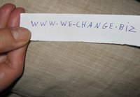

پذيرش > كوچه به كوچه > یک روز از روزهای یک کمپینی/ ناهید میرحاج


 یک روز از روزهای یک کمپینی/ ناهید میرحاج یک روز از روزهای یک کمپینی/ ناهید میرحاج
4 شهریور 1386 - - نسخه قابل چاپ
9 صبح، خیابان پارک
آنقدر دیرم شده که جرات نمی کنم به ساعتم نگاه کنم، بايد بجنبم، چرا همیشه برای ماموگرافی دیر می رسم؟... چقدر از ماموگرافي بدم مِي آید... ولي خب ..........
چادر چاقچور مي کنم، کلی از مسير را باید پياده بروم. هن هن کنان وعرق ريزان به خيابان اصلي مي رسم. منتظر تاکسی می ایستم. با عبور هر ماشینی بلند می گویم :فلسطین جنوبی ! هيچ راننده اي نيش ترمزي هم نمي زند. مجبور می شوم مسیرم را عوض کنم، این بار داد می زنم:
- مستقيم ، مستقيم !
يک تاکسي پيکان درب و داغون ترمز بلندي مي زند
 آقا خيابان .... مي ري؟ آقا خيابان .... مي ري؟
نه خانم مگه نگفتي مستقيم؟
چرا گفتم، ولي فکر کردم شايد لطفي کنين
نه بابا گرفتارم. مي خوام دنبال کاراي شخصيم برم.
چند لحظه سکوت برقرار می شود .... راننده آهي می کشد:
شما شاغلين؟
نه ، چطور مگه؟
- هيچي همين طوري پرسيدم.
نگاهش می کنم، 45 ساله به نظر می رسد
او هم از توی آینه پرسشگرانه نگاهم می کند و سپس:
خبر دارين عده اي از زنا امضا جمع مي کنن !
جا می خورم، مات و مبهوت می شوم، صدای خودم را می شنوم که می گویم:
نه
مثلا شما زن هستيد و نمي دونين؟
انگار این بار دیگری است که برای گرفتن امضا به سراغ من آمده است و من در میان این تغییر نقش مستاصل مانده ام، انگار می خواهم بدانم او چگونه می خواهد از من امضا بگیرد. من من کنان می گویم :
قضيه چيه؟
والا شنيدم زنا مي خوان قانون هايي رو که به ضررشون عوض کنند.
- چه جالب ، مثلا چه قانون هايي ؟
سرش را می چرخاند به سمتم و تحقیر آمیز می گوید:
واقعا که از مرحله پرتي ....نا سلامتي زني ...ها
خوب، سرزنشم نکن من دوهفته اي هست که دنبال دکتر.....
وسط حرفم می پرد :
اي بابا اين قضيه چندين ماهه که شروع شده
چه قضیه ای امضا برای چی ؟
ميگن زنا مي خوان قانون هوو داشتن و صيغه، ديه وچند تا ديگه را که به ضررشونه، عوض کنن. دنبال يک ميليون امضا هستند.
در حالی که حرف می زند از داشبورد ماشین کاغذی را در می آورد :
این کاغذ رو بخون
کاغذی آشنا می بینم، بیانیه است و سه امضا بر آن. شادی در دلم موج می زند...می خواهم بگویم ما چقدر آشناییم ...اما نمی گویم و به نقشم باز می گردم:
- من چیکار مي تونم بکنم، به نظر منم بايد اين قوانين عوض بشه.
راننده این بار ورقه اي باریک را از داشبورت ماشين در مي آورد ...
کامپيوتر بلدي ... خوب اگر بلدم نيستي، بچه محصل حتما داري. بچه هاي اين دوره زمونه همه کاري بلدن.
ورقه کوچک را می گیرم. تکه بریده کاغذی است که با دست بريده شده، و روی آن آدرس اینترنتی سایت کمپین _ تغییر برای برابری – نوشته شده، البته آدرسی که اکنون فیلتر شده است.
این چی هست ؟
اين آدرس کامپيوتر اوناست، اون کاغذی هم که اول دادم کاغذي هست که بايد امضا کني !
البته که امضا مي کنم اما يه سئوال، اين کاغذ امضا را از کجا مي شه پيدا کرد؟
تو کامپيوتر هست. مي توني از اون کپي بگيري.
چه طوري باآنها تماس بگيرم؟ شما را هم که ديگه نمي بينم
برنامه شون همه نوشته شده که با اونها چطوري تماس بگيري، برو تو همون آدرس کامپیوتر که بهت دادم...
مطب دکتر، 30 /10 صبح
بعد از کارهاي مقدماتي دقايقي منتظر مي مانم ... بلاخره به اشاره سر منشي دکتر به اطاق معاينه مي روم . سئوال هاي مکرر دکتر انگار تمام شدني نيست و جواب هاي کوتاه و بريده بريده من که حکايت از ترس دروني ام دارد، بلاخره وقفه اي پيش مي آيد طبق معمول زمان را از دست نمي دهم .
نظرتان در باره کمپين يک ميليون امضا چيست؟
درحالي که با تعجب نگاهي به من مي کند
چي ، يک ميليون امضا چيه ؟
توضيحاتي در باره قوانين نابرابر مي دهم و دفتر چه قوانين را در مي آورم و به دستش می دهم و مشتاقانه منتظر مي مانم !
دکتر با کمال تعجب در حالي که نگاهش را از من مي دزدد ، مي گويد :
مارا چه به اين کارها ... ما وقت براي زن و بچه نداريم که حالا بيايم خودمان را درگير مسايل اجتماعي بکنيم!
شما دختر نداريد ؟
چرا خانم اين چه ربطي به مسئله دارد
به نظر شما ربطي ندارد ؟ اگر دختر شما در آينده با يکي از اين قوانين زندگي اش در معرض خطر قرار بگيرد چه ؟
خانم دست از سر ما بردار من حوصله درد سر ندارم !
در اتاق انتظار با مريض ها خوش و بش مي کنم و دفترچه ها ي حقوقي را مي دهم وبا تاکيد به خانم ها مي گويم اين دفترچه کوچک را جدي بگيريد . دکتر سرکي به بيرون مي کشد با نگاه به من مي گويد خوش آمدي.
از اشتیاق می افتم.
میدان آرژانتین ،30/12 ظهر
بعد از امتحان چند چرخ خراب بلاخره يکي را انتخاب مي کنم . دربين قفسه های مملو از خوراکي به همراه دیگر زن ها دنبال مايحتاج خانه مي گردم زنی که چادر مشکي با مقنعه قهوه اي بر سر دارد غروغرکنان رو به من مي گويد : مي بيني تو اين هفته چقدر گوشت گران تر شده ! تازه زير اين بسته بندي کلي آشغال گوشت هم پيدا مي کني
وقتی او حرف می زند زبان درد دل مرا هم باز می کند:
اي خانم، نمي دونم ما زنا دلمون را به چه چيزي خوش کنيم، اون شوهرامون که سرو گوششون مي جنبد، عشقشون بيرون خونه است، با چندر قازي که ميدن هميشه طلب مرغ و پلو هم دارند.
اي بابا دست به دلم نزن که خونه، شوهر خودم مافنگي و منقلیه ..... امان از دست شوهر خواهرم، از وقتی که دستش به دهنش مي رسه ... ديگه نگو و نپرس که چه مي کنه به يکي دوتا زن قانع نيست ..
با مهرباني حرفش را قطع مي کنم :
ميدوني ما بايد به اين زنا که دارن امضا جمع مي کنن کمک کنيم.
- امضا ء ؟ این ديگه چیه؟
عده اي از زنا تصميم دارن يک ميليون امضا جمع می کنن تا به مجلس بدن و قانونایی مثل صيغه و سرپرستي بچه ، ديه ....
حرفم را قطع می کند و شتابان مي گويد
صبر کن، بيا بريم قسمت لبنيات که خلوته و درست و حسابي برام تعريف کن. ببينم شايد خواهرم نجات پيدا کنه.
با او همراه مي شوم و حین گردش درمیان قفسه ها، دفترچه هاي قوانين را به او نشان مي دهم و از قوانین نابرابر مي گويم و می گویم واو هم از بلاهايي که بر سر خواهرش آمده مي گويد، می گوید و زار مي زند... هرزگاهي هم با پته مقنعه اش صورتش را پاک مي کند و بلاخره مي گويد بگو چکنم ؟
ورقه امضا را به او نشان مي دهم و ضمن امضا کردن از من طلب چند برگه سفيد مي کند ...
بعد از خريد مختصر با کيسه هاي پلاستيکي که خش خش آن با صداي ضجه هاي زن در مغزم آميخته و روحم را سوهان مي کشد به طرف خيابان مي روم، پرايد سبز رنگي که رويش نوشته تاکسي مخصوص بانوان به فارسي و انگليسي توجه ام را جلب مي کند به طرفش مي روم زن جوان سي ساله اي ، زيبا با آرايشي که دوست بفهمد و دشمن نه لبخندي مي زند
خيابان ...... .
بيا بالا خانم
بي درنگ سوار مي شوم و پلاستيک ها را جابجا مي کنم و دفترچه حقوقي را به طرفش مي گيرم و باز دهان باز مي کنم که بگويم آنچه بر من زن و بر زن هاي ديگر اين مزر بوم مي رود ...
مي خندد و مي گويد :
من اين دفتر چه را مي شناسم و يک بار هم امضا کردم اگر اشکالي نداره بازم دوست دارم امضا کنم ميشه ؟
سبکبال وارد غمخانه مي شوم.
ارسال به
بالاترین
،
توییتر
،
فریندفید
،
فیسبوک
در همين بخش :
 روايت بيست و پنجمين شهريور / نرگس طیبات روايت بيست و پنجمين شهريور / نرگس طیبات
وقتی آتش خاموش شود/فرشته نوبخت
آن گاه که زن شدم / ویژه نامه 8 مارس 1391
چیزی زیر پوست این شهر می جوشد / دلارام علی
گرسنگی / وبلاگ سیب و سرگشتگی
ديگر بخش ها :
طرح یک میلیون امضا
|
مقالات
|
سایت نوشته ها
|
اخبار
|
گزارش كمپين
|
گفت و گو
|
علیه سکوت
|
كوچه به كوچه
|
نامه های شما
|
گزارش ویژه
|
گفتگو با اعضا
|
ویژه سالگرد کمپین
|
تصویر برابری
|
دل آرام علی
|
تریبون
|
مقالات
|
تاریخ شفاهی
|
خارج از چارچوب
|
کتابخانه
|
درباره کمپین
|
کمپین در شهرها
|
کمپین در بند
|
صدای تغییر
|
ویژه 22 خرداد
|
لایحه حمایت از خانواده
|
گالری
|
عشا مومنی
|
امیر یعقوبعلی
|
خدیجه مقدم
|
راحله عسگری زاده و نسیم خسروی
|
پروین اردلان،جلوه جواهری، مریم حسین خواه، ناهید کشاورز
|
زینب پیغمبرزاده
|
سعیده امین، سارا ایمانیان، محبوبه حسین زاده، ناهید کشاورز و همایون نامی
|
احترام شادفر
|
نسیم سرابندی زاده،فاطمه دهدشتی
|
وبلاگ مهمان
|
پرونده خرم آباد
|
دستگیری ها
|
مریم مالک
|
پرستو اللهیاری
|
مهرنوش اعتمادی
|
سمیه رشیدی
|
Other Languages
|
همراهان
|
«فراخوان کمپین ده روز با بهاره هدایت»
| English
|